Create and simulate 2D wave-optical scenes interactively. The light is a complex scalar field summed from point sources, so diffraction, interference and focusing all come out of the same sum rather than being added on as special cases.
Forked from Ray Optics Simulation, which traces rays instead. That simulator ships alongside this one: Ray optics simulator · The original at phydemo.app
Point and line sources radiating the 2D Green’s function, with amplitude and phase given as functions of position, plus an ideal plane wave evaluated in closed form.
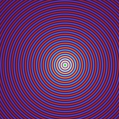
Point source
A time-harmonic point source: the 2D Green’s function, whose amplitude falls as 1/√r.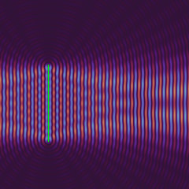
Line source
A line of time-harmonic point sources, with amplitude and phase given as functions of the position along the line.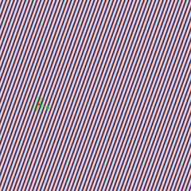
Plane wave
An ideal plane wave filling the subspace it sits in, evaluated in closed form rather than built from point sources.Surfaces that divide space into an ordered stack of subspaces, each with its own refractive index. Refraction is not a rule here: it emerges from sampling the incident field on a surface and re-radiating it with the wavenumber of the medium beyond.
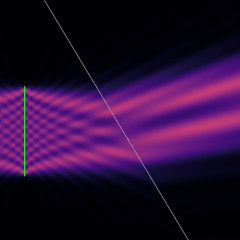
Interface
A surface dividing space, transmitting the field from the subspace before it into the subspace after it. Outside its transverse extent it is opaque.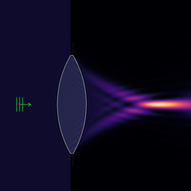
Lens
Two spherical surfaces with glass between them, shaped from a focal length. Unlike a quadratic phase plate it refracts by curvature alone, so it carries the aberration of its own geometry.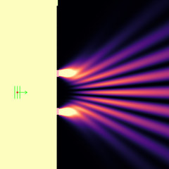
N slits
An opaque screen with a row of identical slits, set by count, width and spacing.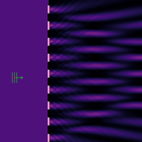
Square grating
A grating with a square-wave transmission, set by pitch and duty cycle. Opaque bars by default; give the bars a phase shift instead for a binary phase grating.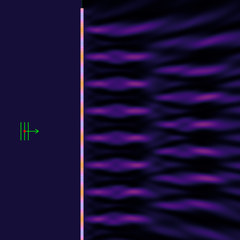
Sinusoidal phase grating
A single-spatial-frequency phase grating, set by pitch and peak-to-peak phase shift. Its orders follow the Bessel series.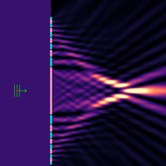
Fresnel zone plate
Zones alternating every half wave of extra path to the focus, either blocking or phase-reversing.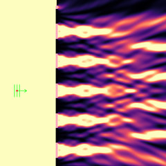
Binary mask
An opaque screen open wherever a function of the transverse coordinate is non-negative.Instruments that read the field without taking any part in it: a probe that finds the brightest point of a subspace and the width of it, and a screen that plots a slice — including the pattern at infinity.
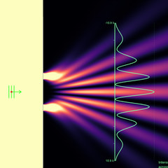
Screen
A line the field is read out along, plotted as a curve. Takes no part in the optics. Can instead show the pattern at infinity over the angles its endpoints subtend at the last surface.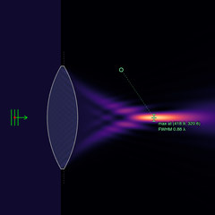
Focus probe
Finds the brightest point of the subspace it is dropped into, and the full width at half maximum of the intensity across it.The same double slit, in each of the three ways the field can be shown.
Intensity
The time-averaged |U|², which is what a detector or a photograph would record. The colour scale saturates at a percentile of the field rather than at its maximum, so the singularity at a point source cannot set the scale for the whole picture.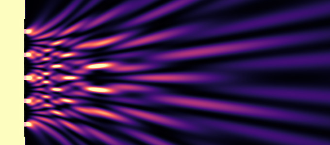
Instantaneous field
The real part of the field at one instant, on a cyclic colormap. The field is time-harmonic, so animating it costs only a re-colouring of a cached texture: the frame rate does not depend on how many sources there are.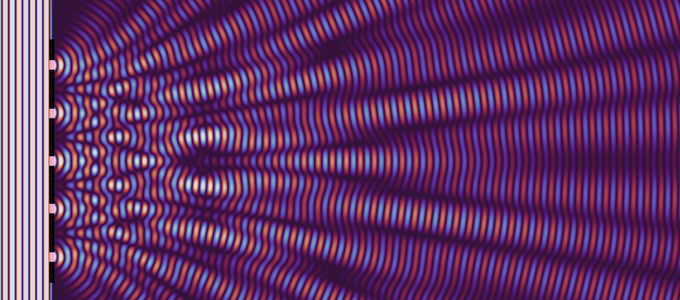
Amplitude and phase
Both at once, in Oklch: lightness carries the amplitude and hue carries the phase. Chroma follows an envelope that vanishes at black and white, where sRGB has no room for it, so the lightness and hue stay exact and only the saturation gives way.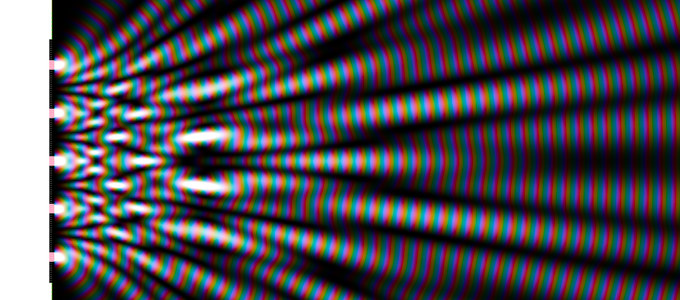
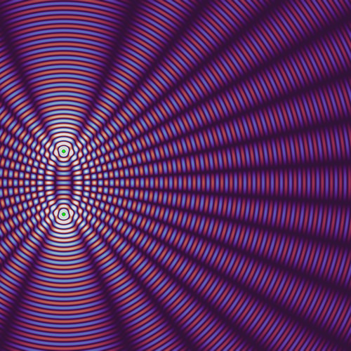
Two point sources
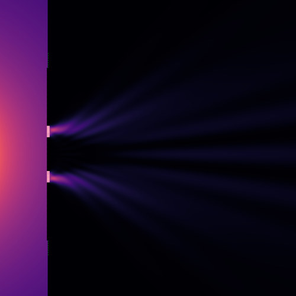
Double slit
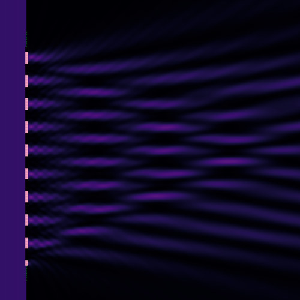
Diffraction grating
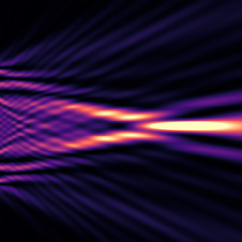
Fresnel zone plate
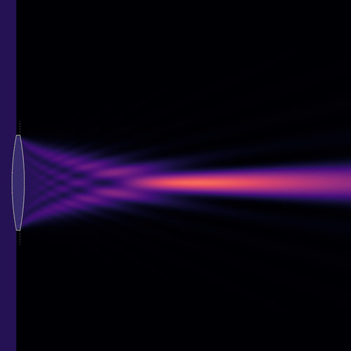
Lens
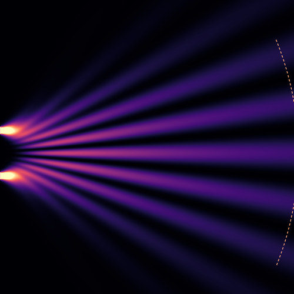
Far field of a double slit